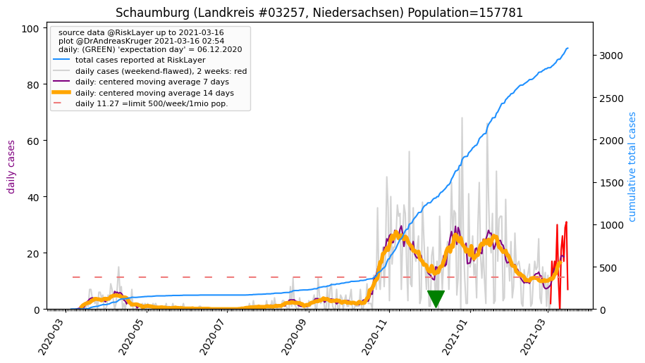
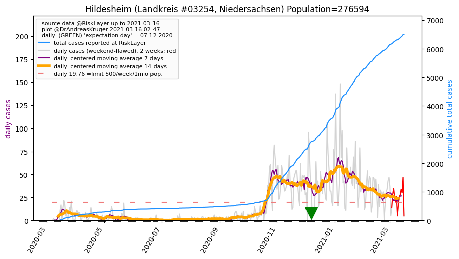
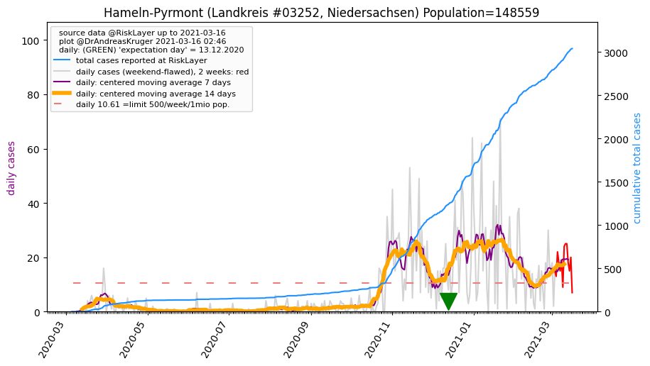
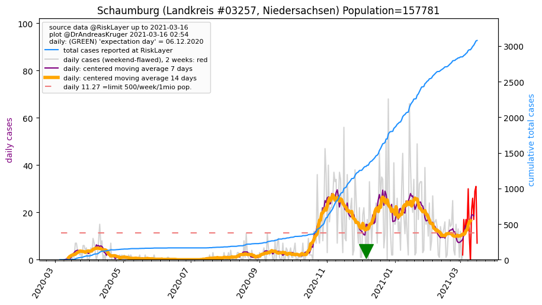
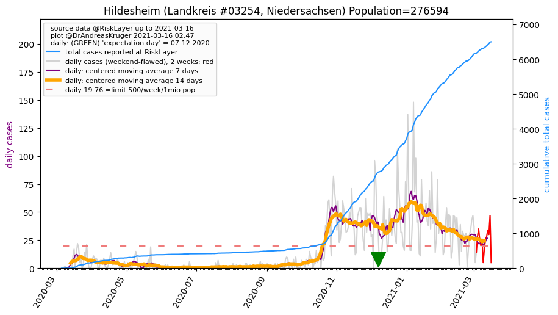
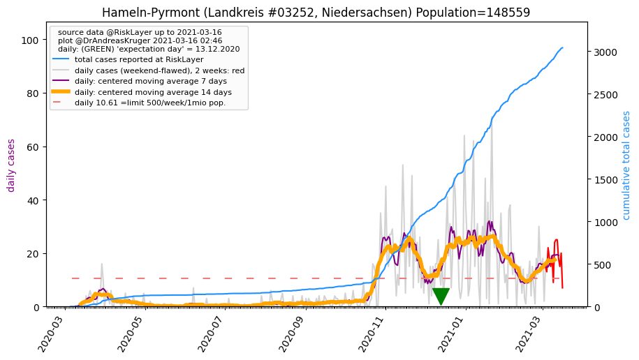

")

")

")

_LK (46.1 km)")
| Region Hannover_LK (0.0 km) |
Schaumburg_LK (37.8 km)  |
Peine_LK (38.8 km) |
| Hildesheim_LK (39.9 km)  |
Celle_LK (41.6 km) |
Hameln-Pyrmont_LK (42.8 km)  |
| Nienburg (Weser)_LK (46.1 km) |
All plots are regenerated with new data every night. Beware this temporary hotspot is an experimental page - it might get removed, so please do not link to it. Instead link to project http://tiny.cc/cov19de.